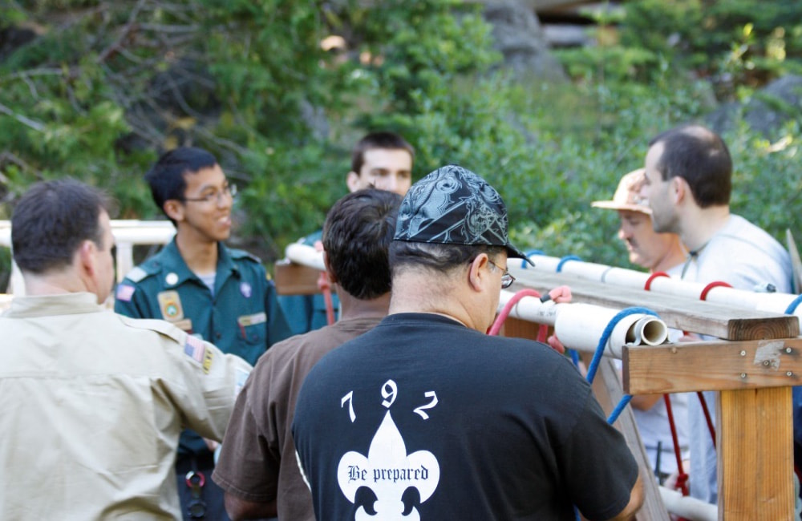

Program Director
Summers 2007 to 2013

A Boy Scout summer resident camp in Long Barn, CA, Camp Hi-Sierra offers 1-week camp session for scouts to participate in activities across 12 different themed areas from rifle shooting to ecology to small-boat sailing.
Starting as a Nature Instructor teaching astronomy, I rose through the ranks to Program Director where I was responsible for the day-to-day operations of the program areas, including the hiring, training, and supervision of a 37 person staff over a 5-week summer season for 350 campers per week.
as program director, broke previous 8-year record with consecutive summers of growth in youth attendance
as program director, oversaw an unprecedented low annual 20-30% staff turnover rate each summer
as a manager, designed and taught the first adult leader training course for scout skills and managing a Boy Scout troop
as a staffer, performed skits and long monologues